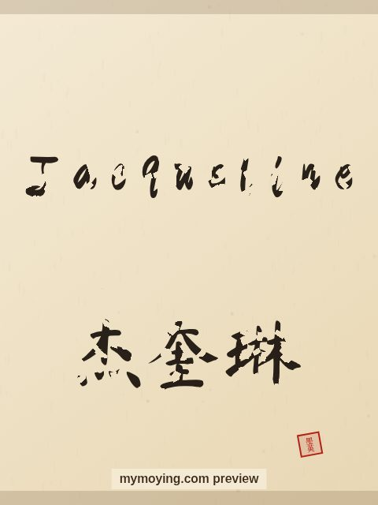

Jacqueline in Chinese Calligraphy
A look at Jacqueline in brush style, with the Chinese transliteration 杰奎琳 (Jié kuí lín) and the meaning of the name.

Sample. “Jacqueline” in the Regular (楷书) brush style with the Chinese name 杰奎琳 (Jié kuí lín). The paid file removes the watermark.
The Chinese characters for Jacqueline
As a transliteration, Jacqueline is usually written 杰奎琳 (Jié kuí lín). Each character is listed below with its own dictionary meaning — the name is chosen by sound, not by meaning, and Moying does not translate names. Please have a person review the characters before any permanent use such as a tattoo.
Origin and meaning
From French, Jacqueline carries the meaning “supplanter (feminine of Jacques)”.
About the name Jacqueline
The name of Jacqueline Kennedy Onassis, the elegant US first lady.
As a gift or a tattoo
The name Jacqueline suits a framed gift, and the clean high-resolution file also works as a tattoo design.
Open Jacqueline in the generatorFree watermarked preview. $1.99 once for a clean high-resolution download of this name in every style and setting. No subscription. Digital product, delivered instantly; see Terms.